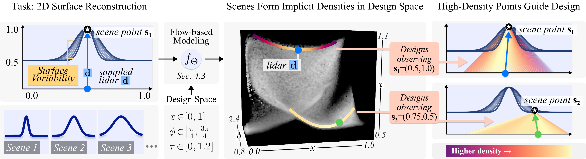
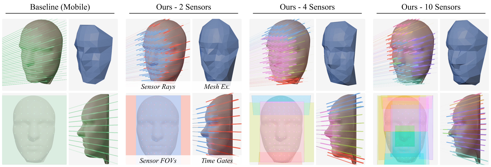
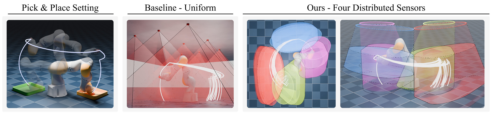
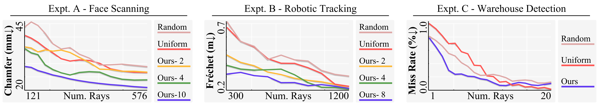

LiDAR system design, choosing how many sensors to use, where to place them, what field of view they should have, and how to time-gate their detectors, is a complex, largely manual process. We present a framework for automated, task-driven LiDAR system design under arbitrary constraints. Each LiDAR configuration is represented as a point in a continuous 6D design space, and a task-specific implicit density over this space is learned with a normalizing flow. New LiDAR systems are then synthesized by modeling sensors as parametric distributions in 6D and fitting these distributions to the learned implicit density via expectation–maximization. We demonstrate the framework across face scanning, distributed end-effector tracking on a 7-DoF robot arm, motion-adaptive warehouse object detection, constraint-aware emitter design with full Mitsuba 3 transient evaluation, and a real-world single-photon LiDAR mesh-reconstruction demo.
We parameterize each LiDAR design as a point d = (x, y, z, φ, ψ, τ) in a continuous 6D space (origin, azimuth, elevation, time-of-flight). The task-driven implicit density places mass on design points whose scene point s = x + τ·v(φ, ψ) lies on a surface of interest and whose line-of-sight is unoccluded. We fit this density with an autoregressive rational-quadratic spline normalizing flow, and synthesize concrete LiDAR systems by EM-fitting a mixture of parametric 6D sensor distributions to samples from the learned density. Hard constraints (fixed positions, capped FoVs, bounded time gates) are applied as projections inside the EM loop, so constraint satisfaction is exact.

The learned implicit LiDAR density visualized over the parameter domain (x ∈ [0, 1], φ ∈ [π/4, 3π/4], τ ∈ [0, 1.2]) for a class of 2D scenes. High-density points are exactly the LiDAR designs most informative for the task.

Face scanning. Automatically synthesized smartphone flash-LiDAR sensor designs adapt to fine facial geometry, allocating coverage to key regions (e.g. a dedicated nose sensor in the 10-sensor configuration) and reallocating per-sensor sampling under fixed ray budgets. Compared to uniform baselines, our designs reduce bandwidth by 6× at matched reconstruction quality.

Distributed end-effector tracking. The framework jointly balances sensor counts, ceiling placements, FoV, and time gating to enable 7-DoF arm tracking under arbitrary classes of pick-and-place motion. Modeling view-dependent occlusion via the visibility term yields strictly better designs.

Real-world single-photon LiDAR. The same designs synthesized in face_scanning, scanned on physical hardware (Micro Photon Devices SPAD with a pulsed laser and two-axis galvanometer scanner). Our learned designs yield denser surface coverage, recover finer facial details, and suppress noise-induced depth discontinuities relative to the uniform scanning baseline.
Open-source release at
NikhilBehari/implicitlidar.
Every experiment runs the same pipeline, driven from a YAML config:
prepare (where applicable) → train → synthesize → evaluate.
| Experiment | Task |
|---|---|
face_scanning |
Smartphone flash-LiDAR design for 3D face mesh reconstruction (Basel Face Model). |
robot_tracking |
Distributed ceiling-mounted LiDAR design for end-effector tracking (KUKA IIWA in MuJoCo); a paired config toggles the visibility term for the occlusion ablation. |
warehouse_detection |
Motion-adaptive scanning design for warehouse object detection. |
emitter_design |
Constraint-aware emitter synthesis for a fixed detector, evaluated by Mitsuba 3 transient rendering. |
real_world |
Real single-photon LiDAR mesh reconstruction using designs synthesized in face_scanning. |
@inproceedings{behari2026implicitlidar,
title = {Task-Driven Implicit Representations for Automated Design of LiDAR Systems},
author = {Behari, Nikhil and Young, Aaron and Klinghoffer, Tzofi and Dave, Akshat and Raskar, Ramesh},
booktitle = {Proceedings of the IEEE/CVF Conference on Computer Vision and Pattern Recognition (CVPR)},
year = {2026},
}
{kind=link}
{kind=link}
{kind=link}
{kind=link}
{kind=link}